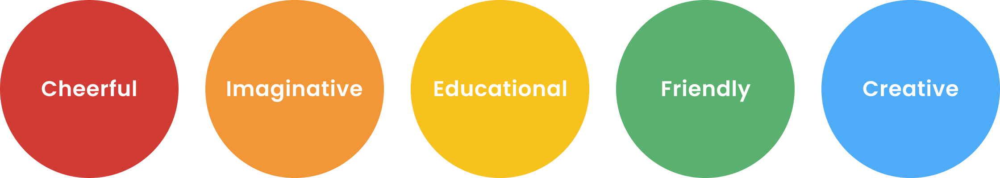
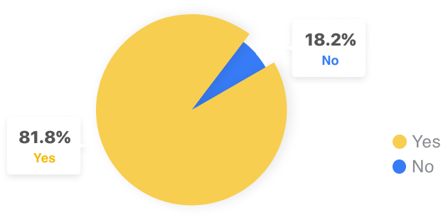
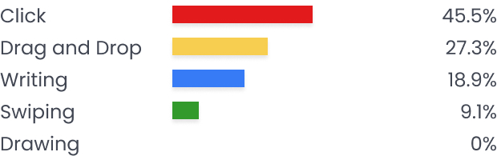
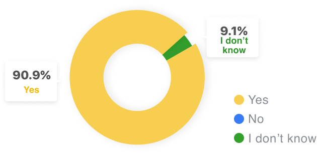
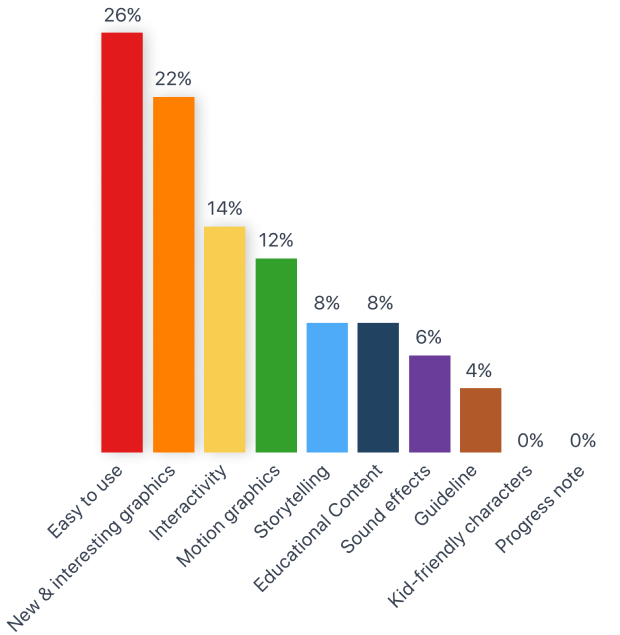
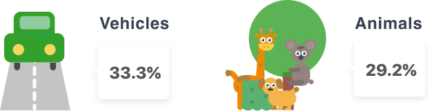
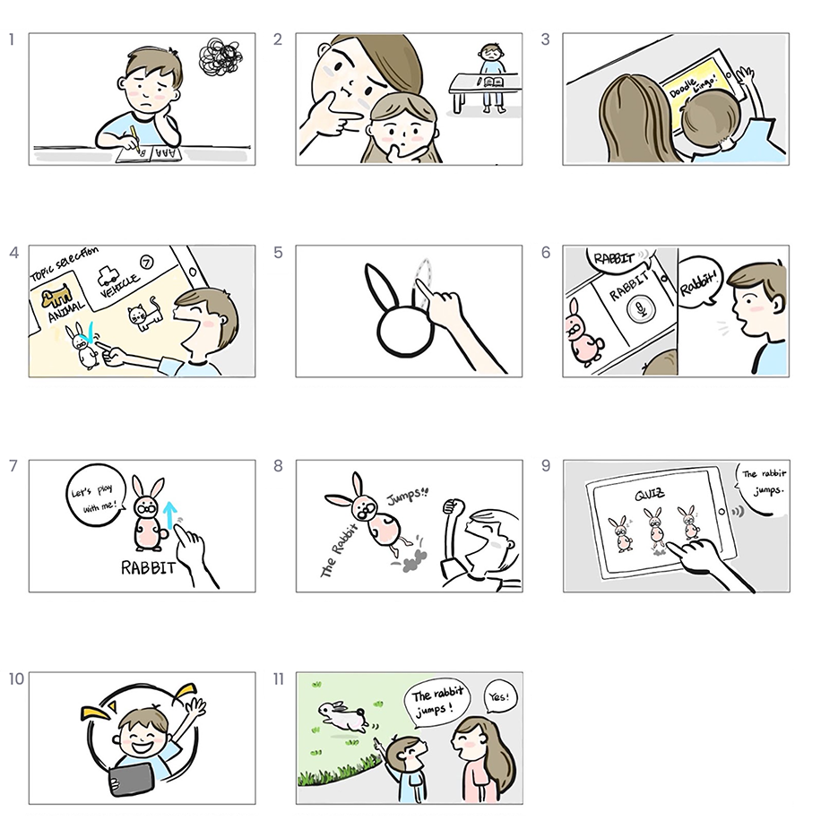
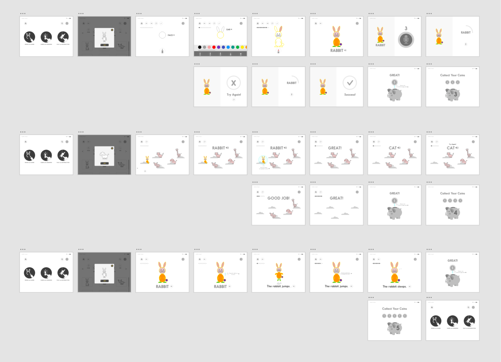
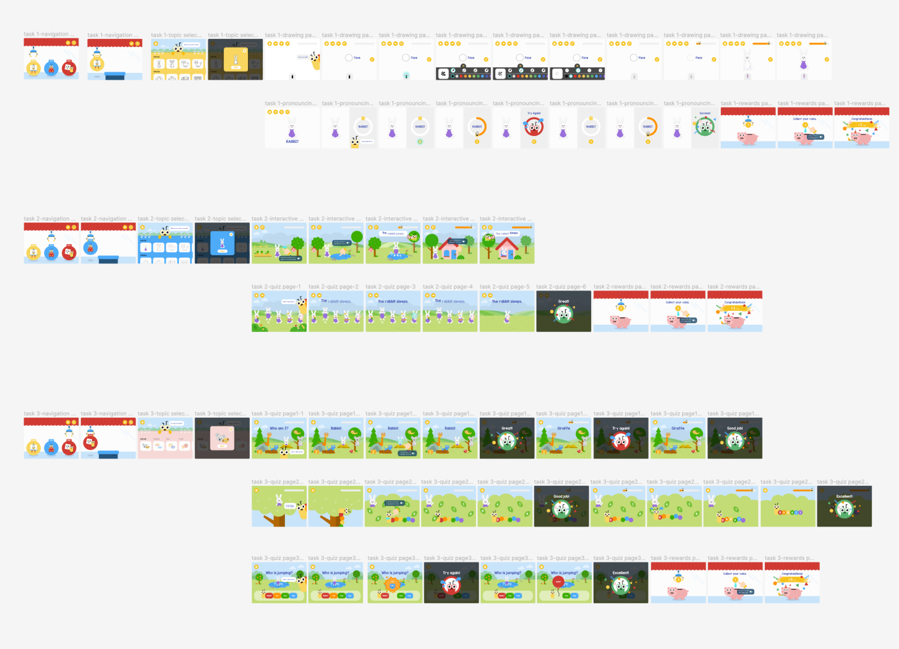

Overview
Doodle Lingo is a project, which I am currently working on for my thesis. Doodle Lingo is an interactive English app that provides a fun way for children to develop English language skills. By combining drawing with language learning, children visually understand and memorize the language more easily. Children will create drawings that they can play with while practicing new vocabulary and sentences.
My Role
Developed wireframes and clickable prototypes, defined the system design, and conducted user tests.
Promo Video
Pain Points
Pain Points
Getting bored with learning from static textbooks
Difficulty memorizing new English words
Difficulty navigating children’s app
Feelings
Feeling challenged
Feeling bored
Feeling frustrated
Feeling overwhelmed
Mission
How can we help children to learn English in an easy and enjoyable way?
Approach
Why is Drawing a Great Tool for Learning English?
- Creating a more cohesive memory trace
- Helping children learn by connecting new and unfamiliar concepts with existing ones
- Stimulating curiosity
- Motivating children to learn
Designing for Kids: Touch Gestures
For designing an app for young children, I needed to learn their physical abilities. Children under 5 have limited motor skills and require very simple physical interactions on touchscreens. In addition, children between 6-8 years old can perform simple trackpad and keyboard usage but is still constrained. Based on the research, I decided to create touchscreen designs emphasizing swiping, tapping, and dragging which are the simplest and most appropriate gestures for young users.
Designing for Kids: Cognitive, Language, and Fine Motor Skills Development
For defining my target audience, I needed to better understand child development. Based on the common development milestones, 4- to 5-year-old children Know how to sort and classify object according to more complex characteristics and put together four to five words into a sentence. At this age, children can draw geometric shapes and tracing on a line with control. Because of this reason, the minimum age of the target audience is 4, because at the age of 4, children have adequate cognitive abilities and fine motor skills to use mobile apps.
Target Audience
My primary target audience is children ages 4 to 7 years old, who have limited motor skills and
prefer drawing to writing. The Doodle Lingo app would help those children improve their motor
skills as well as their English abilities through drawing and various interactive activities
that the app provides.
The secondary target audiences are their parents and English teachers.
User Surveys
Survey participants
: Nine parents, a UX expert, and an English educator
Date: Oct 12, 2020 -
Oct 16, 2020
Q. Have you ever used any language learning apps?
Q. What kind of method did you use for selecting an answer in the language app?
Q. Do you think drawing would be helpful for learning a language?
Q. Why do you think drawing would be helpful for learning a language?
- Better memory retention
- Trigger kid’s curiosity with new words
- Stimulate neurons and create more brain connections between them
- Beneficial for those who are visual learners
Q. Which is the most important thing for a language app for children?
Q. Which topic do you (your children) like?
Other options: Food, Nature, Jobs, Space, and Experiments.
User Interviews
Survey participants: Four parents, seven children, a UX expert,
and an English educator.
Date: Fall 2020

Inspirational Projects
From these inspirational projects, I thought that an app that combines drawing and interactive games could make learning the language more effective and fun.
Competitive Analysis
By analyzing the competitors' pros and cons, I decided to focus on providing various topics for its learning content but keeping the interfaces simple and easy. In addition, Doodle Lingo will provide the coach marks so that children can understand what to do easily. I found that this is one of the shortcomings of other apps.
User Story
He is originally from Korea, but now lives in the U.S. He wants to learn how to speak and read English. However, simple text-based practice books, which are oversized and less interactive, are not exciting to him. Kang needs a way to learn English that is easy and fun.
Storyboards
Information Architecture
Use Case Diagram
Task 1: Use the DRAW feature to draw a rabbit and practice pronunciation of the word Rabbit.
Task 2: Use the PLAY feature and interact with a rabbit drawing to learn simple sentences using the word Rabbit and verbs.
Task 3: Use the QUIZ feature to take vocabulary quizzes on the topic ANIMAL.
Wireframes
I created hand-drawn sketches of each page and quickly realized that paper wireframes would not be able to fully demonstrate the mobile interfaces and interactions. For this reason, I created low-fidelity wireframe using digital prototyping tools for user tests. The first tool I used was Adobe XD, which is simple, easy to use, and my most familiar tool at the time. I created wireframes and printed them out as paper prototypes for the first round of user tests. They were ultimately very useful for understanding the pay layouts and the interface design but were not sufficient to demonstrate interaction design.
Figma is my favorite design tool because it is all-in-one and encapsulates everything from design to prototyping. I used Figma to create high-fidelity mockups and prototypes and used Illustration for detailed graphics on the game background and characters. Digital prototypes using Figma were very helpful for demonstrating not only the interface design but also interaction designs, so I opted for this in user testing.
Prototypes (with Figma)
Results of User Testings
Added a microphone button to help users practice pronunciation when they are ready to repeat instead of a three-second countdown.
In order to learn the correct pronunciation, it would be more helpful to provide an expert's voice instead of replaying the user’s voice that was recorded on the pronunciation page for the quiz question.
To help users understand the direction more easily, provide an animated arrow in a big size instead of a static arrow.
75% of people thought that type B is better. Since the palette goes away, type B could be less distracting for children as they try to draw and learn the word.
Doodle Lingo provides content for listening and speaking in the “Draw” feature. So, I added games
that help users’ reading and writing in the “Quiz” feature.
In addition, Doodle Lingo will
give the user an opportunity to review the quiz game in order to improve their memory.
Project Name
The name “Doodle Lingo” has the functional elements “Doodle”, which hints at drawing, and “Lingo”, which hints at language learning. I created this name comprised of these two words “doodle” and “lingo” to help potential users quickly understand what kind of app it is.
Logo
The caterpillar logo idea was from the long length of the app name.
Colorful text and bold lines give it a kid-friendly look and feel.
The caterpillar character uses as a helper who provides instructions to users in the app.
Style Guide
Mock-ups
Animation


Conclusion
Throughout this project, I was able to experience various design and development processes. Since this project is for children, understanding target audiences’ needs through target audience interviews were critical to improving the project concept targeted toward children. Designing quiz games to make them not only enjoyable but also helpful in terms of educational value was a challenge for me. However, many rounds of iterative user testing helped me improve interaction and interface design. Through user testing, I found out that this project concept helped children engage in learning English actively and enjoyably. I look forward to publishing the Doodle Lingo App to online mobile app stores, so people can really download and play it in the future.